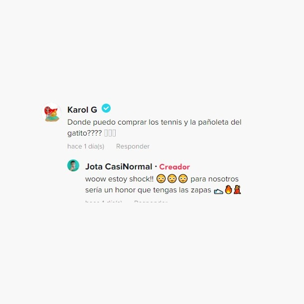

Fecha de publicación: Sabado 29 de Abril de 2023
Una historia de inspiración tuvo un sorprendente final, cuando un emprendedor chileno que fabricó unas zapatillas homenajeando a la artista Karol G fue sorprendido por la propia colombiana, quien se interesó por su producto.
La situación fue protagonizada por el usuario de TikTok, Juan Pablo Ansaldo (@jota_casinormal), quien publicó un video en que comentó cómo la intérprete de "Tusa" lo inspiró a crear un nuevo producto para su emprendimiento de zapatillas, el que terminó siendo un éxito.
La historia comenzó, según el creador de contenido, cuando escuchó la canción "Mañana será bonito", la que le dejó "una lección de vida". Por esto, sintió la inspiración para crear un nuevo producto, basado en la lírica del tema musical.
Puso manos a la obra y creó unas zapatillas con vivos colores y con el título de la canción en el frente y en la lengüeta de la misma.
La reacción de "La bichota"Tras la viralización del contenido, los seguidores de Cambal, el nombre de emprendimiento, comenzaron a etiquetar a Karol G, quien compartió el video en su cuenta de Instagram, a través de historias, lo que aumentó las visualizaciones en TikTok. De paso, muchos le preguntaron cómo podían adquirir el producto.
Pero la sorpresa para el comerciante fue mayor cuando la propia "Bichota" comentó la publicación para preguntar por las zapatillas. "¿Dónde puedo comprar los tennis y la pañoleta del gatito?", fue la pregunta que hizo la artista.
Ansaldo reconoció estar sorprendido y agradecido por lo sucedido, y rápidamente le respondió: "Wow, estoy en shock. Para nosotros sería un honor que tuvieras las zapas".
En conversación con Página 7, el emprendedor comentó que "no lo creía, pensé que me estaban 'leseando', y mi esposa también. Lo más raro es que fue la primera historia que subió en el día, y estuvo horas sin subir nada más. Para mí fue impresionante, porque era solo mi video", afirmó.
Respecto a la entrega de las zapatillas a la colombiana, aseveró que le dejó mensajes, pero no ha tenido respuestas, aunque indicó que espera entregárselas. "Si se da, se da", sentenció.